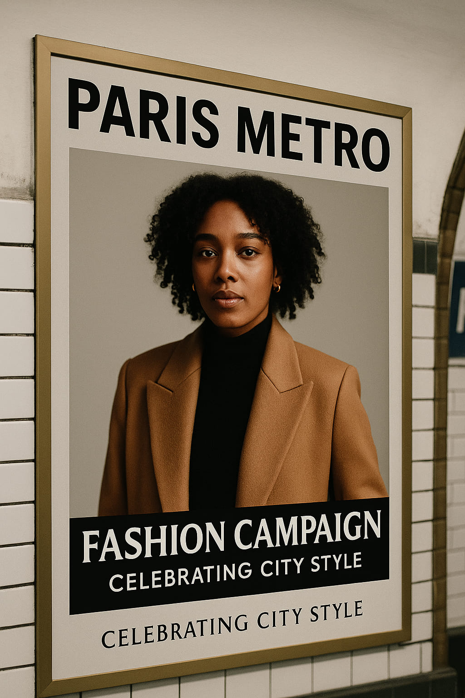

Paris Metro Turns Into Fashion Gallery in New Campaign
Paris is known for many things: its art, its architecture, its food—and, of course, its fashion. But today, the city has woven all of those elements together in a bold new way. Starting this morning, metro riders across Paris are stepping into something unexpected: a city-wide visual campaign turning the underground into a living style gallery.
Officially launched by RATP and supported by the Paris City Hall, the initiative is titled “Métro Mode”, and it celebrates the style of everyday Parisians. Not runway couture, not celebrity fashion—but real street style, captured candidly inside the very trains and platforms that move over 4 million people daily.
Where Art Meets Commute
Large-format portraits have been installed in more than 20 key metro stations, including Châtelet, Saint-Lazare, République and Bastille. The images, shot by emerging French photographers like Camille Roussel and Malik Lemoine, showcase people of all backgrounds, ages, and styles riding the metro in their authentic, everyday looks.
“We wanted to capture how fashion actually lives in Paris,” said campaign curator Léa Dumont. “It’s not about what people wear to fashion week—it’s what they wear going to work, to dinner, or home after midnight. That’s the true Parisian aesthetic.”
The Street Is the New Runway
The campaign features Parisians wearing everything from oversized thrifted coats to sharply tailored trousers, ballet flats to combat boots. You'll see older men in hats reading *Le Monde*, students in layered streetwear scrolling their phones, and artists in paint-splattered denim asleep by their sketchbooks.
What ties them together? Individuality. Confidence. Unfiltered elegance.
“This is not curated fashion. It’s spontaneous, lived-in, and visually rich,” — Camille Roussel
Interactive and Immersive
Beyond static posters, several metro cars have been redesigned with mirrored panels, golden light strips, and curated music playlists by Paris-based DJs. QR codes throughout the system link to short videos, behind-the-scenes shoots, and even an Instagram filter inspired by the campaign’s soft sepia tones.
Commuters are encouraged to photograph their outfits in these special cars and tag them with #MétroMode for a chance to be featured in upcoming pop-up exhibits throughout the summer.
Why Now?
This campaign arrives just weeks before Paris gears up to host the 2025 Olympic Games, with the city investing in culture-forward public initiatives that go beyond infrastructure. “We want the world to see that fashion is not just in our museums or luxury houses,” said Anne Hidalgo’s cultural advisor. “It’s in the metro. It’s in motion.”
It also follows rising trends in cities like Seoul and Milan where public transit is being reframed as a canvas for creative expression.
The Fashion World Responds
Publications like L'Officiel and i-D have praised the campaign as one of the freshest fashion initiatives of the year. Several Parisian designers, including Marine Serre and Jacquemus, have reposted the imagery on their accounts, applauding its democratic ethos.
“It’s romantic, it’s real, and it reminds us that fashion is a language spoken by everyone, not just the privileged few,” said stylist Lou Garcia, who consulted on the project.
Final Stop: Inspiration
As commuters move through their daily routines this summer, they’ll be surrounded not by ads for fast fashion or smartphones—but by reflections of themselves, their neighbors, and their city’s eclectic visual identity. It’s a gentle, beautiful reminder that style is everywhere, especially where we least expect it.
Words by Style Atlas